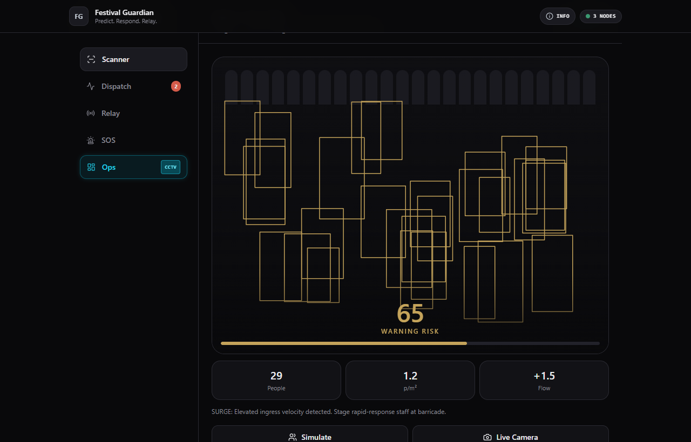
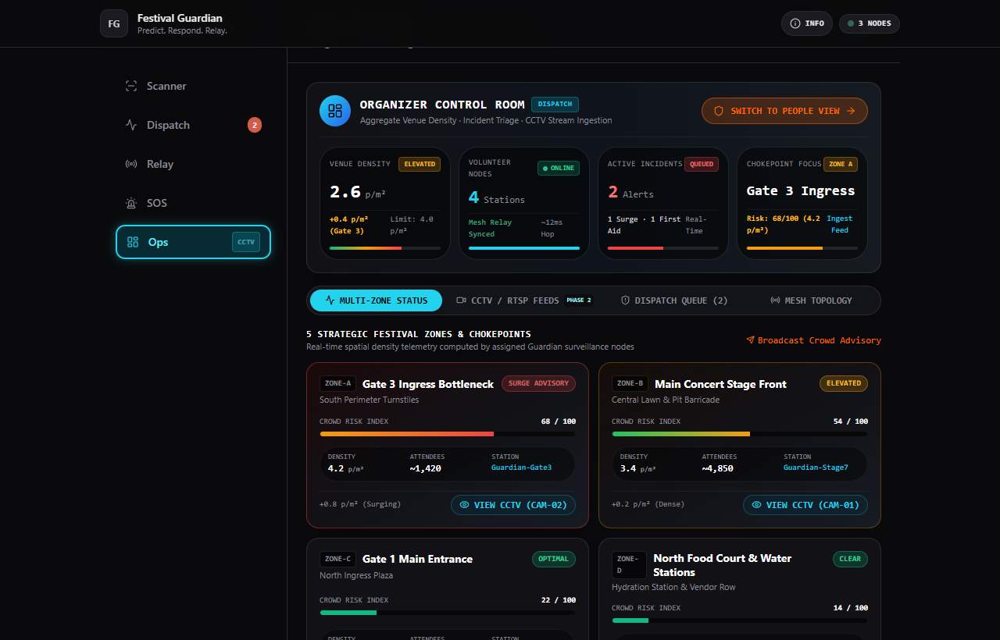

Predict. Respond. Relay.
On-device edge AI crowd vision & decentralized zero-internet mesh relay.
Early stampede prevention deployed at the gate before crushes form.
Mass gatherings like festivals, temples, and stadiums create fatal blindspots.
1. Gradual Buildup
Crowd density rises silently at narrow turnstiles and bottlenecks. By the time security visually spots the crush, egress paths are already physically impassable.
2. Cellular Blackout
Tens of thousands of concurrent smartphones instantly jam mobile towers (eNodeB/gNodeB). SMS, emergency phone calls, and cloud apps fail when needed most.
3. Consumer App Flaw
Expecting panicked attendees trapped in a surging crowd to unlock their phones and type incident reports is impossible. Safety must be organizer-deployed.
💡 Core Paradigm Shift: Ground marshals with fixed Guardian Nodes detect risks at the gates, communicating over zero-internet mesh to central dispatch.
A clean separation between frontline gate scanners and command dispatch.
Gate Marshal / Volunteer View
What the gate staff sees: Real-time camera scanner, instant 0-100 crowd risk index, 0.8s hold-to-fire SOS buttons, and background offline mesh routing. Staff only manage their local gate.
Organizer Control Room (Ops)
What central dispatch sees: Multi-zone spatial risk heat-status across 5 venue gates, incoming incident dispatch queue with hop latency, and venue CCTV video feeds.

Zero-cloud tensor processing calibrated to NFPA & Fruin Level of Service standards.
100%
On-Device Processing
TensorFlow.js WebGL backend (quantized for Snapdragon NPU). Zero video streaming to the cloud—100% attendee privacy and zero network latency.
2-Pass
Multi-Scale Tiling
Pass 1 scans the global frame for foreground individuals; Pass 2 activates a high-resolution center tile to count distant, occluded people that standard models miss.
≥4.0 p/m²
Fruin LOS F Threshold
Calibrated on crowd science: combines Person Count, Spatial Density, and Ingress Velocity Delta to trigger alerts before shockwaves form.
INPUT FRAME → GPU/NPU TILING → BOUNDING BOXES → DENSITY CALCULATION → 0-100 RISK GAUGE
When cell towers crash, emergency packets hop phone-to-phone across volunteers.
0 Mbps
Cellular Independence
Uses Google Nearby Connections API (BLE 5.2 + Wi-Fi Direct). Transmits encrypted alert packets over local peer-to-peer radio without towers.
3 Hops
Bounded TTL Routing
Cryptographic packet headers with a 3-hop Time-to-Live prevent network storms while covering >450 meters across festival sectors.
∼24 ms
Hop Latency & Dedup
LRU packet deduplication drops redundant broadcasts instantly, keeping battery consumption minimal on volunteer devices.
Zero false-positive triggers with built-in voice-guided medical aid.
🚨 Critical SOS
High-priority broadcast with GPS/gate coordinates. 0.8s hold-to-confirm with animated radial SVG ring ensures accidental taps never trigger alerts.
📦 Theft Reporting
One-tap incident logging for pickpocketing and lost property. Tags the physical node sector directly onto security team dispatch boards.
💖 Medical First Aid
Dispatches nearest medic node. Simultaneously renders offline airway & compression triage instructions while staff wait for on-site paramedics.
Web Audio Synthesizer: Native browser sound generation provides tactile acoustic confirmation (clicks, radar pings, emergency alarms) with zero external audio assets.
Turning existing stadium cameras into smart density sensors without new hardware.
Zero Hardware Procurement
Major concert grounds and stadiums already have dozens of RTSP/ONVIF security cameras. Phase 2 taps into these existing feeds via WebRTC Edge Gateways.
Identical Vision Pipeline
By the time a frame enters the model, it makes no difference whether it came from a phone camera or an RTSP stream. Three simulated channels live today: CAM-01, CAM-02, CAM-03.

Honest engineering breakdown: What is running live today vs. production target.
| TECHNICAL DIMENSION | TODAY'S WORKING PROTOTYPE | GRAND FINALE PRODUCTION BUILD |
|---|---|---|
| Target Platform | Next.js 14 Progressive Web App (PWA) | Native Android (Kotlin + Jetpack Compose) |
| On-Device AI | TensorFlow.js WebGL (Browser GPU) | Quantized TFLite on Snapdragon NPU via NNAPI |
| Mesh Networking | Browser BroadcastChannel P2P Simulation | Google Nearby Connections (Wi-Fi Direct + BLE 5.2) |
| CCTV Feeds | Simulated WebRTC RTSP Video Feeds | On-Premise RTSP/HLS Edge Gateway hardware |
| User Personas | Dual-Persona: Field Node & Ops Room | Dual-Persona: Gate Marshals & Police Dispatch |
Execution plan for the Grand Finale hackathon sprint.
0–12 Hours
Deploy Kotlin Android shell, connect camera feed, and bind quantized MobileNetV2 on Qualcomm Snapdragon NPU.
12–30 Hours
Implement Google Nearby Connections API; demonstrate live offline SOS hop between two phones with SIM cards removed.
30–48 Hours
Integrate multi-zone dispatch console, test RTSP stream gateway ingestion, and finalize live judge demonstration.
Making mass gatherings safe through on-device edge intelligence.
Live Prototype: https://festival-guardian.vercel.app · GitHub: sujay2520/festival-guardian